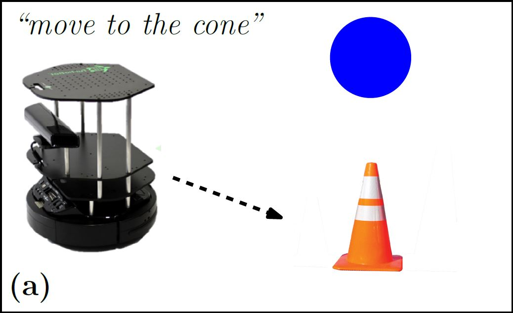

Mycal Tucker

I am currently a software developer on the Advanced Robotics team at Amazon Robotics.
Previously, I got my Masters in Engineering in the Robust Robotics Group at the Computer Science and Artificial Intelligence Laboratory (CSAIL) at MIT, interested in robotics. My research adviser was Professor Nicholas Roy in the Department of Aeronautics and Astronautics.
Prior to joining CSAIL as a graduate student, I earned my BS in Electrical Engineering and Computer Science and Aeronautical and Astronautical Engineering from MIT in 2015.
Recent
I recently got a paper on Natural Language Grounding accepted at ISRR 2017 and will present my findings at the conference:
|  | Learning Unknown Groundings for Natural Language
Interaction with Mobile Robots Mycal Tucker, Derya Aksaray, Rohan Paul, Greg Stein, and Nicholas Roy, ISRR 2017 [ pdf, video ] |
A few months ago, I finished edX courses on R and C++. Now I'm looking into Intro to Music theory, but I also have been reading a lot more recently. I finished Ulysses last night (11/17/2107) and want to reread The Odyssey now.